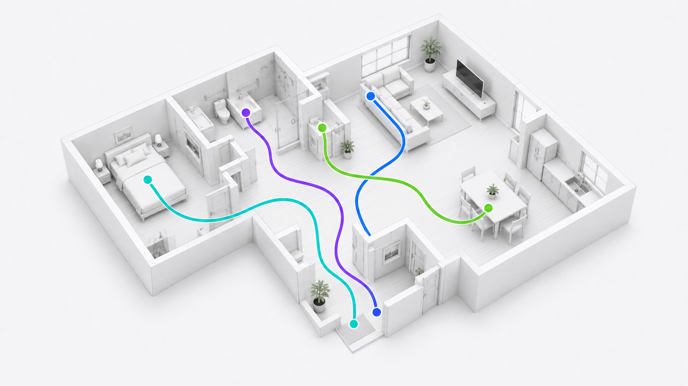
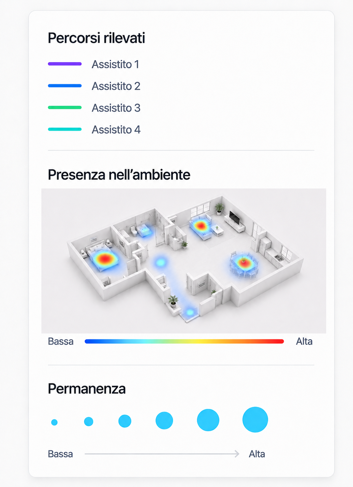

Mentorage rileva ciò che accade nella stanza senza trasformarla in un ambiente videosorvegliato.
Tecnologia Mentorage
Come Mentorage capisce ciò che accade
Il sensore osserva l’ambiente, comprende la scena e riconosce i movimenti. L’intelligenza artificiale trasforma ciò che accade nella stanza in informazioni utili per chi assiste, senza registrare video.
Riconosce dove si trovano le persone e gli oggetti, misura le distanze e segue i movimenti nell’ambiente.
Capisce quando una persona si alza, cade, esce dalla stanza o permane a lungo in un determinato ambiente.
Una lettura più completa
Ogni ambiente diventa una fonte di informazioni.
La combinazione di dati spaziali e intelligenza artificiale permette di leggere gli ambienti nel tempo, riconoscendo presenze, movimenti e cambiamenti rilevanti.

